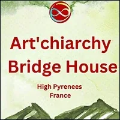

Art'chiary Bridge-House
- …
Art'chiary Bridge-House
- …
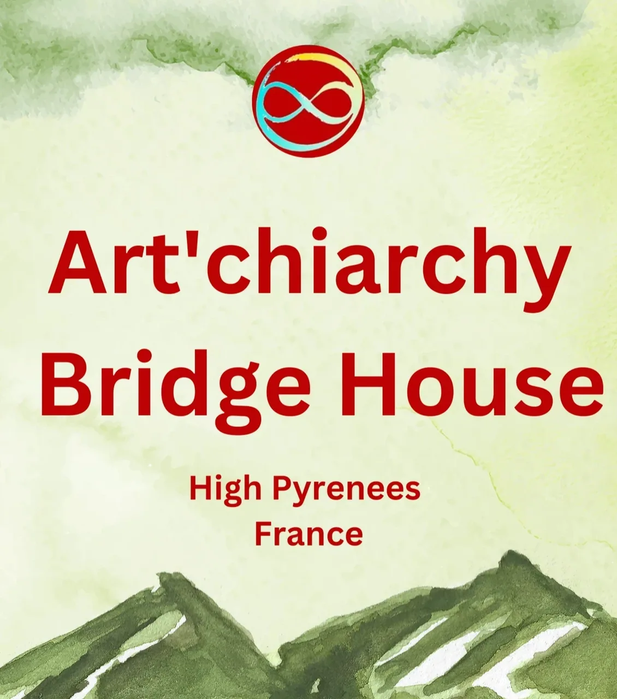
- Art'chiarchy Bridge-House - Love - Transformation - Creation - Radical Responsibility - Connection - Healing- Are you ready to play another game?- Art'chiarchy Bridge House - Art‘chiarchy Bridgehouse is a two to four weeks experiment to create a permanent artistic and emotionally empowering gateway for a new culture called Archiarchy. This culture is rooted in Radical Responsibility with the mission to open the field for local and inland Archan permaculture.- It is a get-togetherof Possibilitators or Possibilitators in the making to weave together the non-linear creation forces of artists and healers with the thoughware of Possibility Management to collaborate, deepen intimacy and live fully out one‘s life.- The place of theBridge-House is located in Bagnères de Bigorre, directly in front of the Pyrenees to reconnect with, integrate and heal in nature.- *** - Are you ready to take the plunge and live life to full out?- The Bridge-House Art'chiarchy is a unique opportunity for development and co-evolve. - co-evolution within a circle of trained magicians, healers and coaches in the service of a thoughtware (system of thought) serving Collaboration and Creation. - Modern thoughtware (Standard Human Intelligence Thoughtware S.H.I.T.) operates on survival and the past. It's old-fashioned to fool oneself into thinking that meditation, yoga or personal development will change things. It may help for a while, but there comes a time when the tasks we have to do require a different kinds of change and technology. - For this, we need to be able to create another intimate connection with our Emotional body. In order to overcome the barriers we ourselves have erected to protect ourselves in the past, we need to be able to generate the same amount of energy used before to break them down. - A team committed to your engagement is getting together and opening the doors to the first stage of this Bridge-House from Tuesday, - September 19 to October 3.- Want to support the project on the long term?- -Do you have a plot of land that you'd like to give up for the long term and take some time to get to know who we are first (or not)? - -Do you have acquaintances who would like to allocate land for this type of project and would like to let us know? - -Do you have funds you'd like to allocate, donate or lend to enable the acquisition of a site? - -Do you have xxx skills, a desire to help (and availability), xxx plot of land, xxx project,...? - More infos here :- https://docs.google.com/document/d/1OVSmBJIZCfaiyKoLK0L4VeSXA58XVBEaYBKCfY5ssuo/edit?usp=sharing - Bridge-House Art'chiarchy Gallery- Torus Technology meeting - Possibility Menu - Teamwork - Rage Club - Feelings work - Program - A space for transformation in the service of the evolution of thoughtfulness, for a culture that regenerates living beings - Program?- WEEK1: from 19th of September to 25th of September- Creation and Learning- September 20th, Wednesday - 15h-17h:- - - Possibility Team(A team to deepen the possibilities in french culture)- September 20th, Wednesday - 17h30-20h30:- - - Authentic relatingin the context of- Possibility Managementwith Daphné Sarpyener- September 21st, Thursday - 15h45-17h45:- - - Compost and Creation Circle(learn to- compostthe roadblocks into matter by- creation)- September 22nd, Friday - 19h-20h30:- - - Awkward Diner- Sept. 23rd, Saturday - 9h30-11h30:- - - Possibility Menuin town (delivering Possibilities in the center of Bagnères de Bigorre, a way to discover- Possibility Managementwith- non-linearity, experiments and by- Being a Bridge)- Sept. 23rd, Saturday - 16h-19h:- - - Playfight- radical responsibility(Possibility Management- thoughtwareto get clarity when doing Playfight. Connecting with- feelingsas resources for- intimacy).- September 24th, Sunday - 9h-12h:- - - Conscious Anger- introduction to- Rage Club- Bridge-Housecrew (anger as a resource for connection and lifting up your abilities to hold space). Minimum participation required: 10€.- Sept. 25th, Monday - 10h-12h:- - - Money Cubwith Gabriel H. Lechemin. Money Club is happening with Collaboration happening, with spaceholding from your fears. This is a- chaordicspace where you can deepen your distinctions about Spaceholding, Scarcity, Money, Non-Material Value, Archiarcy. What is your- Quest-Ion? What is your Purpose and- Necessity?- --- - WEEK2: from 26th of September to 3rd of October- Magic School and Connection to Nature- Sept. 26th, Tuesday - 13h30 to 16h:- - - What's happening?with Gabriela Fagundes (have you ever meet all of your parts in one moment? What about stopping judging yourself? This is an inner discovery about your "zoo")- Sept. 26th, Tuesday - 19h to 21h:- - - Worktalk "Magics and the Art of Manifestation"with Daphné Sarpyener and Gabriel H. Lechemin (What are the different kinds of Magics? What for? Have you ever dreamt parts of your life that actually came into matter?)- Sept. 27th, Wednesday - 9h-12h:- - - Collaborative Ritual in Natureabout the Future with Gabriel H. Lechemin and Daphné Sarpyener (did you ever dreamed your future? What about consciously dreaming it through a collective ritual in nature).- Sept. 28th, Thursday - 15h-17h:- - - Possibility Team- Sept. 28th, Thursday - 18h30-21h30:- - - Following the impulsesworkshop by Daphné Sarpyener (have you ever followed your impulses for no reason? This is an experiment about group dynamics)- Sept. 29th, Friday - 16h to 19h:- -Playfight with Gabriela M. Fagundes (Playfight in the context of Possibility Management) - Sept. 29th, Friday - 20h to 22h:- - - Bon Fire, stories and legends circlewith Leonhar Geupel (telling your legends is one of the skills of a Possibilitator, are you ready to step into your own legend making?)- Sept. 30th, Saturday - 9h to 18h:- - - Rage Club for Life!Laboratory of Clarity and Empowerment. Are you ready to meet your anger ecstatically? Now is the time. Are you ready to leave behind the mask of the good girl or good boy and assume your full power in the service of your life and Life? This is a one-day initiation in Bagnères de Bigorre, inland. Register here:- https://docs.google.com/forms/d/e/1FAIpQLSeq9s9cQvQQprberqFDqnfWby2lbWMvDcS3KxDmTkkFjGDwrA/viewform- October 2nd:- -Connecting to Nature- 9h-11h - Possibility of meeting the team outside the program and choosing off the menu. - Please contact us on (+thirty three, six) 66682098. whatsapp/telegram/phone - Bridge-House Art'chiarchy Gallery - Resources - "The opposite of scarcity is not abundance. The opposite of scarcity is Creation."- -Clinton Callahan - Skills, capabilities, translations, exchanges...- Resources available during this Bridge-House: - -Permaculture design of your project (garden and collective or dream in incubation)-Emotional Healing Processes (vital energy, disturbances, emotional blockages, disorders, incapacity, pain...)-Individual Possibility Coaching on your life project - -Accompaniment of your group (mediation, coaching) for tastructure (association, collective, common project...) - -Parent-child support - -Possibility Team - -Introduction to Club de Rage - -Consultation for your Ecovillage project (current or future) - -Cartomancy, mediumship, astrology, speaking from the unknown, role-playing, etc. - Real-time translation possibilities:- English, German, Portuguese, French.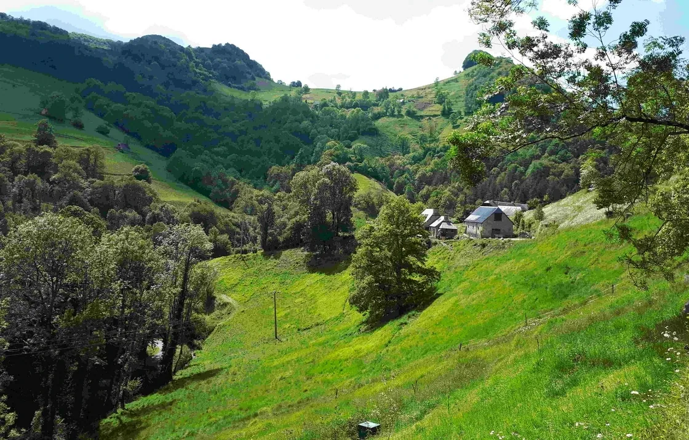
- What & Where? - On the outskirts of Bagnères de Bigorre (contact us for address and directions) - This Bridge-House is based on the MoneyClub principles:- The energy of money is an energy at the service of the living and of Creation in general. Each workshop or proposal is the subject of a monetary or non-monetary proposal to support the long-term emergence of the Bridge-House. - When you make a gift of energy (art - people - money), you're supporting your process, and giving the gift to yourself. On a collective and social level, money symbolizes commitment (the time and work required to harvest it). In my experience, "without money" doesn't work, but rather supports the disengagement and power struggles of the childish ego state (the child who wants everything for nothing, and always wants more without giving anything in return). In this sense, and as a permaculturist, I've witnessed the mistakes made by myself and my peers about money. Giving means supporting, and even more so, supporting your own evolution. There will be no room for the victims of money and time. If you want to come, first free yourself from the constraints of time and the self-sabotage of doubt. - Article on doubt : - https://medium.com/@ingrid.schmithusen/self-doubt-a-trick-of-your-gremlin-a037415af3d0- Other exchange currencies:- -propose a location (a long-term plot of land with a ruin or house to renovate, or a long-term plot of land with a house to acquire)-propose coaching, decartomancy or energetic sessions in exchange-propose a biodanza or free dance session - -design the future logo of the permanent Bridge-House...? - What is a Bridge-House?- It's a transitional space between the modern world and a world based on melodrama, survival and scarcity. - This is what happens when you wallow in the inner lament of "I'll never make it", "I'm not enough... it's too much", and "above all, don't cause any trouble". It only allows us to remain powerless, sabotaging our own power and will to evolve. And yet, everything contributes to our evolution; it's the very essence of life. - What's dead inside you? What needs to evolve? Are you ready to commit yourself to change (instead of trying to change others)? - A Bridge-House is a Gameworld enabling the emergence of a new world within oneself and for the world. - More articles:- - - Global Archan Gameworld Builders- - - How my Possibility Team Sprung- Radical Responsibility?- It's about taking full responsibility for your life, here and now, without lying to yourself and honoring your Creator power. "I am the one who decides about my life, and I am committed to taking charge of my life" could be the new decision you make in order to embody this and experience the real-life benefits of such a decision. - Context - Love - Transformation - Creation - Radical Responsibility - Connection - Healing- The Art'chiarchy Bridge-House- is a Radical Responsible space where Beings Create, Empower each other, Collaborate, Integrate and Transform for their next step of Evolution. - Radical Responsibility is that place where what you see as a job is your job. It is coming to phase 2 of feelings. Phase 1 is "I feel..." and not acting. Phase 2 is "I feel..." and acting from your feelings. - This is a space for putting Creation into matter. One can evolve and not see the steps that he or she already did. What if you had the opportunity to jack in what you want to serve on planet Earth and do it? - This is a specific time frame. This is the moment you chose to radically follow your impulses, get to know yourself better and apply what you care about. This cannot happen without feelings. This will not happen without using consciously the power of your feelings. - You are ready to take the next evolutionary step in your journey and willing to put aside the lies. - You are ready to use your resources to bring your full Being on fire for Creation. - Empowering for the development of an Archan Culture - Creation of Art to honor and make visible Transformation - Integration of the Emotional Healing Processes - Collaboration for Winning happening - Evolution for bringing your Non-Material Value in action - Extract from Brianne Vaillancourt writing: example of radical relating- "In Modern Culture, when you physiologically become “adult”, you most often psychologically remain a child. Although you are considered “adult” according to social standards, you continue to be owned by the worldview you reactively built throughout childhood, by the values that your parents and culture passed down to you, by the beliefs you decided to follow in order to survive, by the traumas you adapted yourself to, by the concepts that you hold in your mind.- You remain a child because your behavior is dictated by survival strategies you learned in childhood. You are ruled by stories that you have about yourself and the world. You are continuously over-taken by your compulsions, patterns, assumptions, projections, hormones, addictions and sexual energy.- You have no real Agency.- This is what is at the core of childhood – not having the capacity to Choose.- Living at Chuckleberry is an opportunity to encounter Adulthood. The Chuckleberry lifestyle involves built-in Initiatory processes and transformational journeys that give you the distinctions, tools and skills that you need to become the Creator of your life.- Becoming an Adult takes unwavering commitment to a life of practice. It takes having the will to say no to the temptations of the mind and of the Shadow. It takes: being willing to look at old wounds and transform them; taking back your Authority; keeping your promises; listening to Gaia; becoming Centered; showing up on time; experientially distinguishing between your Being and your Ego; being able to feel all four core feelings in varying intensities; taking a stand for what you care about; speaking up; not giving up; having a Team; and much more. All of it is available here."- And- "The experience of Adulthood has a flavour of fullness, contentment, and- fulfillment. Like finally arriving from a long and exhausting journey.- There is no more looking. No more looking for something outside to- complete you, no more looking inside for the truth that might save you. There is no more trying to become something which- you are not already. Time slows down, and seems to stop in the depth of- Presence that is available as an Adult.- Adulthood might be calling to you, from the depth of your Being. Remaining a- child is repetitive, disempowering, and ultimately boring.- As Clinton Callahan says, “Nobody can do it for you. More importantly,- nobody can stop you from doing it.” In reality, it is your choice."- With Love, - Brianne Vaillancourt, Jon Scott & The Chuckleberry Team - Some words :- Radical Responsibility means:- What is, is, as it is, here and now in the moment, with no story attached. (Arnaud Desjardins) - Just this. (Lee Lozowick) - There is no such thing as a problem. It is impossible to be a victim. Irresponsibility is an illusion. You have a Box. You are not your Box. Low drama is Gremlin food. Responsibility is applied consciousness. If you see a job it is your job to do. The universe is built out of archetypal love. (Clinton Callahan) - Art:- Art is making visble the invisible. - Transformation:- Is Healing + Integration. Integration is reinventing yourself. - Want to know more?- Here you will find some more resources about the wider picture of the project: - Information- WHAT IS A BRIDGE-HOUSE ?- A Bridge-House is a - rapid-learning- culture-shiftenvironment open to anyone ready to take a leap into Radical Responsible context.- The clarity that Bridge-House participants are - Possibilitatorson an authentic evolutionary Path insures that each Bridge House is contexted in:- Authentic Adulthood - Ongoing 3 Phase HealingandInitiatoryProcesses - Emotional Healing Processes - Radical Responsibility - High Drama - Upgraded Thoughtware - Archiarchy (archived — not captured) - Torus Meeting Technologies(e.g. The Purple Card, Frying Pan, Wok, M.E.S.S., Wisdom Counsel, etc.) - and the Study Groups,Possibility Teams,Rage Clubs,Trainings,Tools,Thoughtmaps,Distinctions,S.P.A.R.K. Experiments, andProcessesofPossibility Management. - Each Bridge-House serves the world as an actual 'bridge' that leads from the - Thoughtwareedges of the modern- capitalist patriarchal empire, over the gap of the unknown, into regenerative and transformational life in next culture -- Archiarchy (archived — not captured)- the culture that is naturally emerging since matriarchy and patriarchy have run their course.- Every aspect of modern life as we have come to know it is unregenerative. - The known world is in a state of radical flux. It is groundless, and baseless, because modern culture is exterminating life on Earth at the fastest possible rate. - All known procedures are in question... commerce, education, health, government, military, religion, food production, lifestyle, transportation, clothing... but what are the answers? They too are unknown. This means that each Bridge-House is, by necessity, a research center, sharing the findings from their experiments with other Bridge-Houses around the world. - SPECIALTIES OF BRIDGE-HOUSE ARTCHIARCHY- Every Bridge-House is unique due to its geographical location, projects specialties, and spaceholders. - Bridge-House Artchiarchy is characterized by numerous good fortunes: - Located in a safe rural area with four distinct seasons (southern France), yet mild winters and summers. - Research and implementation center for Archan Permaculture. - Permaculture skills to be applied on the land and in other projects. - A spaceholder happy to share outrageous food preparation and preservation skills, including herbs and French recipes. - Building construction and regenerative living projects. - Bridge-House Artchiarchy is also a creative space to share the next culture specialty talents you have already developed. - Most importantly, we want to liberate your true questions, the inner motivation driving you to develop and offer your piece of the great puzzle: how humans can live in regenerative Archan culture on Earth together. - Visiting us- When visiting?In priority between 19th of September and 3rd of October- For one or 2 weeks, also possible to pass by. - What conditions?Participating in the activities at your pace and be committed. Participating financially to the Bridge-House- For what to do?See, programm section, and you are at source of your proposals- For how many hours to be present during the stay, per day?Around 3h would be the less, although there is not really a defined amount. - Authentic - Art'chiarchy Bridge-House Codex- A Codex documents the Context and Rules of Engagement (how to play the game) of each Bridge-House - gameworld. The Codex explains the- Purpose, how things go, how you enter the gameworld, and how you leave it. Never a finished document, and never at the center of the gameworld, nonetheless the Codex is a crucial reference document that is available to the general public.- ART'CHIARCHY BRIDGE-HOUSE CODEX- Frying pan - Torus Technology - Resistance decision making - Phase1 & Phase2 of feelings work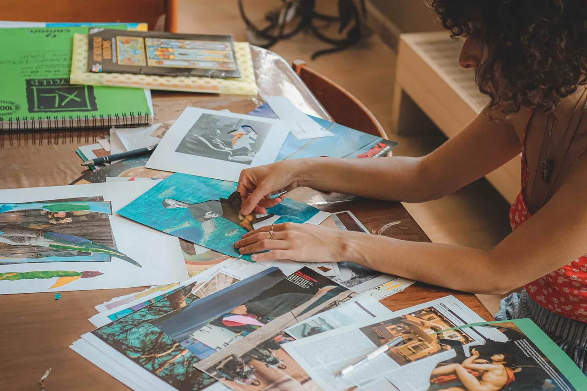
- Art Therapy - Bridge-House Artchiarchy Team- here is the Infinity Ring of Radically Responsible Spaceholders of the Art'chiarchy Bridge-House.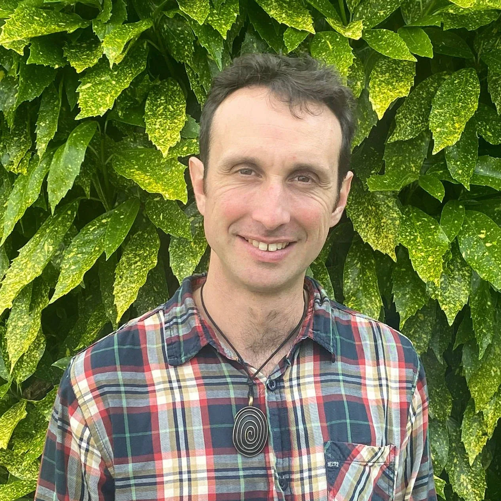
- ## Gabriel H. Lechemin- Coach. Artist. Untrainer. Mage. Archan Permaculturist.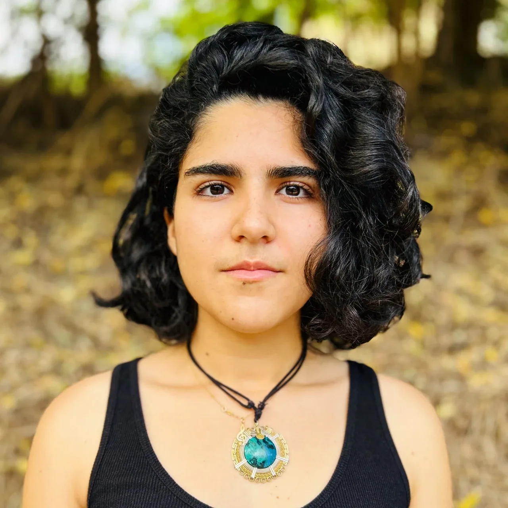
- ## Gabriela Fagundes- https://www.gabrielafagundes.com/- I am Rage Club Spaceholder, Unfolding Essence, Summoner of Integrity. I hold space for people to reclaim their full authority to be what they are.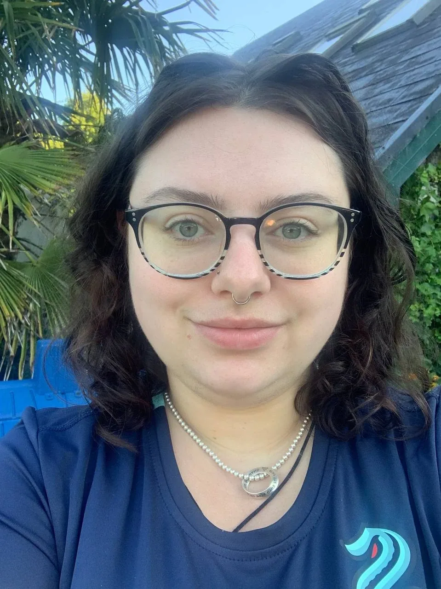
- ## Eithne Leahy- Sourceress, storyteller, community-builder I also do not have a website but will link my medium account where i publish my articles: - https://medium.com/@eleahy14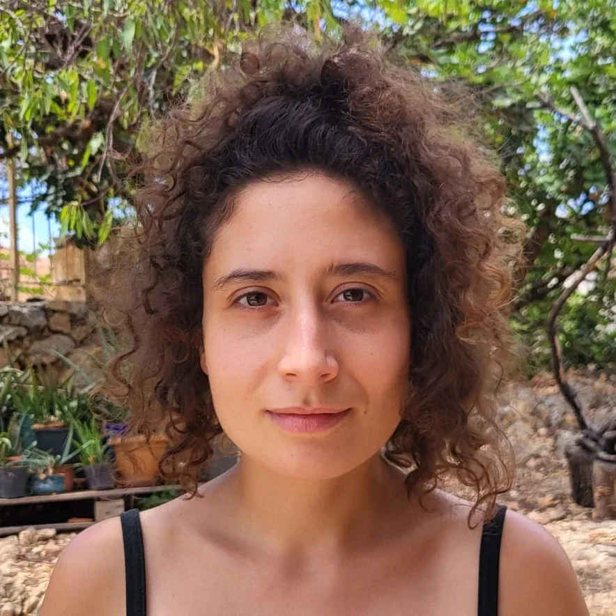
- ## Daphné Sarpyener- Daphné Sarpyener is a Turkish-Belgian Possibilitator. She discovered authentic relating (AR) in 2019 and started facilitating workshops in different communities under the name - LYBRA- ARC en Lien- Daphné has a particular interest in creating bridges between art, PM and AR.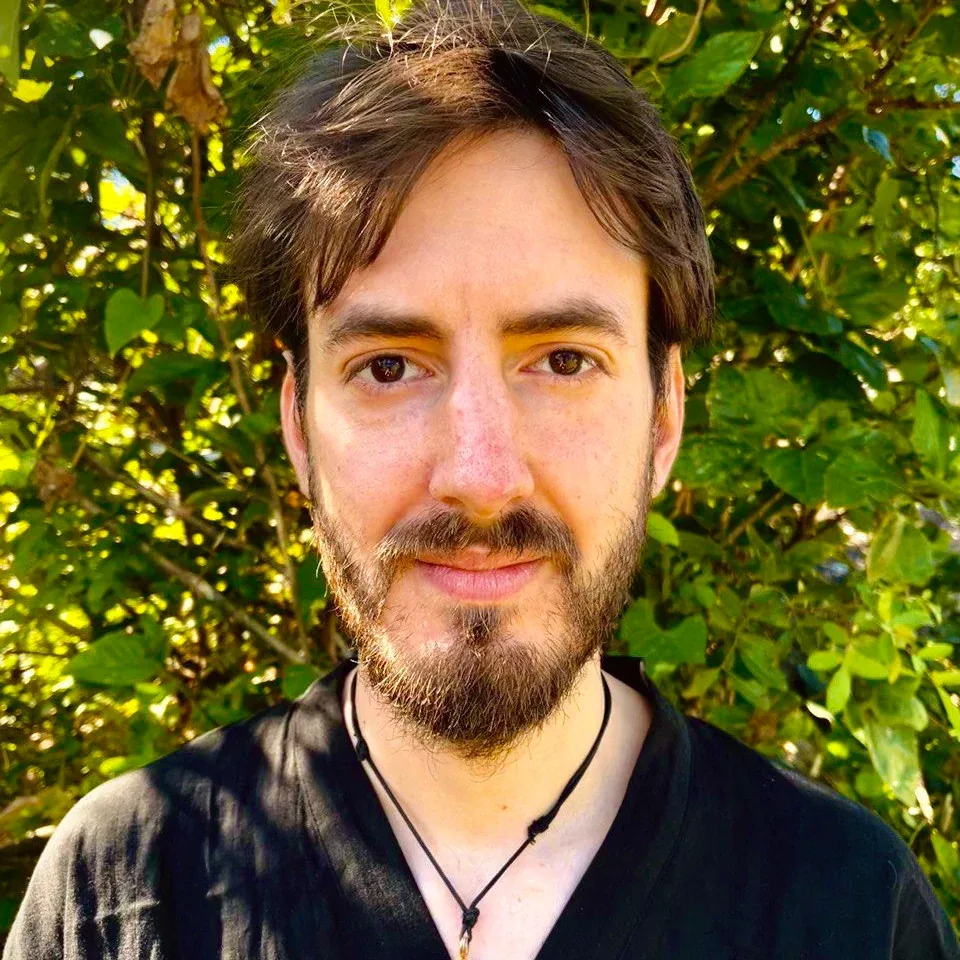
- ## Leonhard Geupel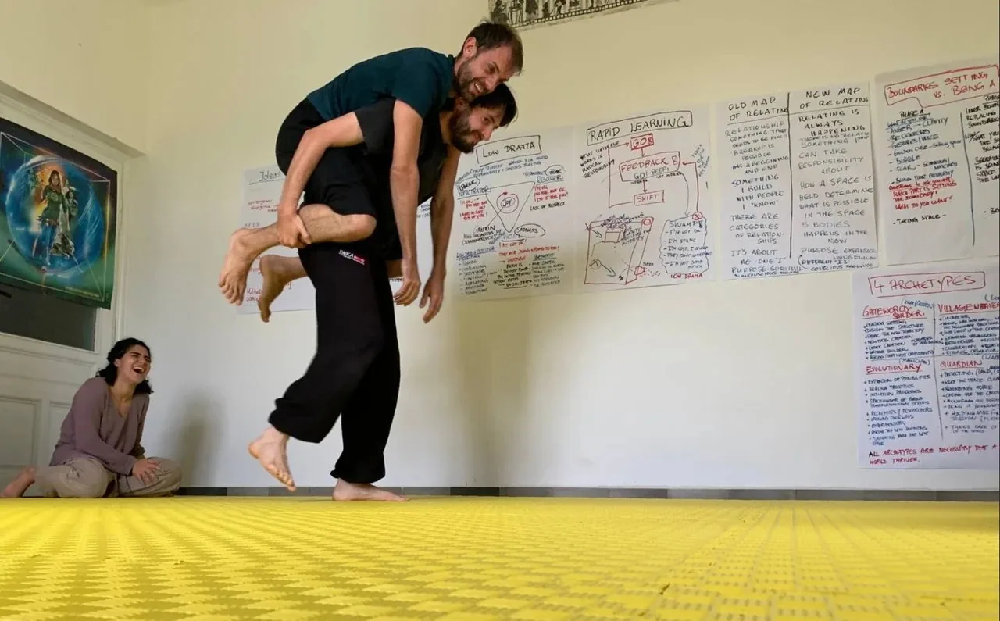
- Playfight - Bridge-House Art'chiarchy Gallery- ### Ajouter un titre- ### Ajouter un titre- ### Ajouter un titre- ### Ajouter un titre- ### Ajouter un titre - Gallery Week 1: Creation and Learning- Possibility Menu in town - Journey into the Earth - Torus Technology - Compost and Creation Circle - Authentic Relating - Conscious massage - 2nd Possibility Menu in town - Playfight - Journal Week 1 and before (preparation)- UPDATE #3: "A legend about finding the physical house in town" - 19th August 2023- 2 days before leaving french territory to a row of 3 Labs in Poland, I got an answer from a - couple for a House. - Fear was rising in my system, yet an incredible trust was present in me. I decided to hold space for a Bridge-House. It seems to me to have a second nature to hold space for collective and shared spaces. I am a Village Weaver and a Mage, I cavitate space for Bridge-House Art'chiarchy in French territory. This will be the first step to a wider and Permanent Bridge-House for Archan Permaculture Gameworld. - How did it went? - 4 days before leaving France, still no house in sight. There is no clear consensus about the announces we have sorted out so far. I decide to visit one that seems close to what we envisionned so far. This is a failure, really different from what it seemed to be. No garden, just a steep that goes to the road and a very closeby neighborhood. I am sad and I'm asking my Lover if she has something in mind, like another doorway. She's sharing with me a House Exchange community. Before nowing why, I just sign up in the form to start swaping house project. No house in sight neither. It seems that I have been exhausted all solutions so far: we did Air B&B, Leboncoin (national and local community of exchange and selling between people in France), Facebook Marketplace, a German website for renting houses fewo-direkt.de... and neither of the announces were too expansive or too close to the city to have a proper environment. - Fear of not finding the house, scarcity of Money could have disolved the team at that point if everyone didn't commit to do their EHPs related to it, as Torus Technology offers this clarity, with the Purple Card. - ECCO answered. I posted a second time an announce for finding a house to support an Art residence and Personal Development - a shortcut in modern culture to bridge what is actually a Bridge-House (a whole conversation). - This time worked. Two days before leaving French territory I visited the future house. 3 signs, plus an additional one a month later (when I update this document) followed my creation of reality. The house proposed is a swap. As my Lover suggested, this house is a swap of house for my appartment. - This was real box expansion. How could I imagine that a whole family would exchange their living home for my appartment? I could not even consider this, even more in a country where people are so attached to their material value and core belief that their house is their life (ther is definitely a family oriented culture and "at home" pattern in France). As surprising as it was, the house was proposed as an exchange: for my appartment plus supporting them for a project. This was the first sign: Box expansion through this unexpected house swap. - 2nd sign, when I arrived for visiting the house for the first time, I took a look at the house nearby, its name said "Gaby". Only one person is calling me "Gaby" as I don't like this surname, nut dare to let him specifically call me with it. He is a reality creator like me, living in Mexico. Interesting huh? - -Gabriel H. Lechemin - UPDATE #2: 12 August 2023- by Gabriel H. Lechemin (HarbigArt) - My first Bridge-House experience was in Poland, one year ago. - There I could experience a fully committed team of transformational edge-workers coming together and willing to exchange non-material value such as Healing, Transformation, Love, Empowerment. - I've been working in the field of ecovillages, communities and Permaculture, therefore I know very well the shitware in action: creating apparently "good looking" relations but with a lot of low drama going on underneath the carpet. - I commit that I will no allow any low drama to happen and use my sword of clarity to say "no", "stop", "enough is enough" and decide what I want, moment to moment. - Even though the vast majority of Human Beings on this planet are - dramaholic, this doesn't mean that this is the only way to relate.- My intention for this Bridge-House is to create a first step for a wider project build upon Archan Permaculture gameworld that include relationship to Inner Permaculture (Healing, Transformation, Creation...) and Outer Permaculture (Food growth, Forest Gardens, Ecological housing...). - This wider Project encompasses: - to create a permanent space for a community of Possibilitators - to practice and live for a certain amount of time various aspects of Possibility Management - to gap the Bridgeover the unknown from thepresentcapitalisticpatriarchalthoughtware to next culture -Archiarchy (archived — not captured) - to exchange ours skills - to coacheach other withfeed-back - to be a part in supporting the evolution of beings - to experience how this spaceis transforming and integrating so different personalities, - to see Boxescrumble, including mine. - if You want to experience this energetic field Yourself, please get in touch with me. At present we are open to visitors, as collaborators. - UPDATE #1: 1st August 2023- Dear team - I had an intuition today reading - journey into Earth website.- Lourdes is not far from the place (reachable by bus in 40mn) we can have a connection there to deepen messages from Gaïa and use it as a portal. - And there is cave that has also this quality 45mn by feet from Bagnères de Bigorre. - This led me to chaorganise a intuition week, after integration and crazy week. - In this intuition week, I propose a journey 'in between lives' (this one that I'm currently living and the past one) - I've conducted this experiment for 7 years now and there is high energy available after this. - There could be a next Bridge-House week at the end, as a bigger project that I have and will share soon is about a Permanent Bridge-House here. - -Gabriel H. Lechemin - to create a permanent space for a community of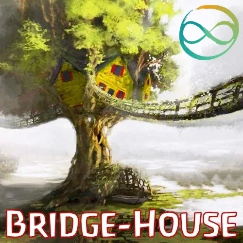
- Contact Us- BRIDGE-HOUSE ARTCHIARCHY INQUIRY FORM - NOTE:This website is a- Bubble in the Bubble Map- StartOver.xyz- doorway- experiments- upgrade your thoughtware- point of origin- create- possibility- knowledge- about. Your- thoughtware- with. When you- change your thoughtware- liquid state- reorganizes- feelings- emotions- upgrading your thoughtware- build matrix- consciousness- low drama- reactivity- collectively build- responsibly- BHARTCHI.00to log your Matrix Point for reading this website on- StartOver.xyz